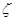

| Volume 1, Issue 2 - Year 2012 - Pages 102-108 | View PDF (Full-text) |
| DOI: 10.11159/ijmem.2012.013 | Linked References |
| ISSN: 1929-2724 | |
Simulation of Snow Adhesion on Real-Scale Lines
Reham M.H. Hefny, László E Kollár, Masoud Farzaneh
NSERC/Hydro-Quebec/UQAC Industrial Chair on Atmospheric Icing of Power Network Equipment (CIGELE) and Canada Research Chair on Engineering of Power Network Atmospheric Icing (INGIVRE), UQAC
555 boulevard de l'Universiéé, Chicoutimi, Québec, Canada
reham-mahmoud.hefny1@uqac.ca; laszlo_kollar@uqac.ca; masoud_farzaneh@uqac.ca
Abstract- Wet snow shedding from overhead power transmission cables due to periodically repeated impacts was simulated using the finite element software ADINA. It was simulated by point loads whose mass depended on the snow load on the cable. The adhesion between snow and cable was modeled by vertical springs whose stiffness was determined so that the spring force simulates tensile adhesion. Failure criterion for snow detachment from the cable was defined based on the acceleration of the snow-covered cable. This model was applied on a real scale cable with span length of 470 m. Time history of displacement at the excitation point was the input to the model, where varying impacts lead to different accelerations of the cable. The results showed the effects of increasing impact loads on cable jump and, consequently, on the rate of shedding.
Keywords: Adhesion, Transmission Line Cable, Finite Element Model, Failure Criterion, Snow Shedding
© Copyright 2012 Authors - This is an Open Access article published under the Creative Commons Attribution License terms. Unrestricted use, distribution, and reproduction in any medium are permitted, provided the original work is properly cited.
1. Introduction
The interest of numerical modeling of the effects of snow shedding phenomena is to assess the possible dynamic impacts on transmission line elements, and to check whether the amplitude of the induced motion is within design limits of clearances between the conductor and the ground or other conductors.
The first attempts to estimate rebound heights of conductors due to sudden ice release were made decades ago (Morgan, and Swift, 1964, Kalman et al., 2007). Matsuura (Matsuura et al., 1995) carried out real scale observations and analyses of ice shedding, which are fully exposed to heavy atmospheric icing (6kg/m). They measured the meteorological conditions, weight of ice, and the tension of insulator strings. Also, they monitored the motion of conductors. Matsuura et al. performed the dynamic effects of sudden ice shedding by the finite element method using ADINA. It can be noticed that a detailed description of their numerical model is lacking, but they concluded that the numerical and experimental results of the maximum cable jump were in agreement. Thus, the numerical analysis of the ice shedding phenomena by the finite element method(using ADINA) could be useful for the design of transmission lines prone to severe atmospheric icing.
More recently, the improvement of computer software has led to the finite element modeling of both static and dynamic effects of instantaneous ice shedding on overhead lines (Kalman et al., 2007, Matsuura et al., 1995, Roshan and McClure, 1998, Jamaleddine et al.,1993). Jamaleddine et al. studied the effect of ice shedding on overhead lines using Automatic Dynamic Incremental Nonlinear Analysis (ADINA, 2004), a commercial software package. In their study, reduced-scale ice shedding simulations were also carried out experimentally by the sudden drop of dead weights. A comparison between the experimental and numerical model results confirmed the good performance of the numerical models for both static and transient dynamic analyses. Jamleddine(1993) and Roshan Fekr ( 1995) explored many ice-shedding scenarios on single and multiple spans of overhead cables, with different parameters including ice thickness, span length, partial ice shedding, and difference in support elevation. These scenarios were 2-D simplifications of actual overhead lines, and they did not consider the flexibility of the support towers. The models consisted of cable spinned at the ends, and hinged suspension strings. The general modeling approach has been summarized in McClure and Lapointe (McClure, and Lapointe, 2003) explaining the transient response following a cable rupture and it is applicable to the shedding of ice and snow. Following Jamaleddine work, Roshan Fekr (1995, 1998) studied a two-span line section response to instantaneous shedding. He considered several ice-shedding scenarios with variables like ice thickness, span length, difference in elevation between extremes and suspension points, number of spans per line section, presence of unequal spans, and partial ice shedding on sub-spans.
Kalman's study (Kalman et al., 2005, 2007) is an advanced application to ice shedding. He studied the application of a mechanical shock on the cable, which created a propagating wave causing ice rupture. Ice deposits are modeled as a beam finite element connected in parallel to cable elements using ADINA. Ice beam elements are prone to failure criteria based on axial and bending stresses. When the stresses exceed this failure criterion, the ice elements are removed from the model (element death upon rupture). This model was a powerful tool to estimate the amount of ice that can be shed following the application of a shock load. Roberge (2006) simulated the dynamic effects following snow shedding from a cable. He proposed a finite element model(ADINA) for snow using non-linear spring elements with zero stiffness and damping properties. Snow elements with mass are modeled as vertical loads acting on the nodes. The propagation of snow shedding is modeled by removing mass of adjacent elements at time intervals corresponding to the speed of shedding (Roberge, 2006, Roberge et al., 2007). Roberge recommended that, considering the very low cohesive forces of wet snow sleeves at the instant prior to natural shedding. Failure criteria should be added to the model based on an upward acceleration not on mechanical stresses (Roberge, 2006, Roberge et al., 2007). He concluded that the effects of partial shedding are proportional to the amount of snow removed; mid-span displacement and cable tension amplitudes were doubled when snow shedding percentage was doubled. It was found that snow does not shed suddenly from the cable: it will either shed completely by unzipping manner or partially. Roberge performed simulations on a 470-m ground wire model and he observed two speeds to evaluate the effects of snow shedding: 111 m/s, the speed at which total unzipping may progress; and 14m/s, the speed at which partial natural shedding observed. He performed his tests in a cold room on 2.5m cable section (Roberge, 2006, Roberge et al., 2007).
The response of the ground wire was evaluated by assuming that a transverse wave can trigger shedding, as it progresses along the whole span. Snow unzipping is simulated by removing the snow elements from the model at the rate of 111 m/s. Regarding cable tension, the cable became slack during the first rebound, then, once the cable was totally unloaded, the tension oscillated between 4 kN and 20 kN (Roberge, 2006, Roberge et al., 2007). Roberge (Roberge, 2006) has mentioned that during the experiments, wet snow on a short cable was observed to shed naturally at speeds up to 14 m/s. This speed was used to evaluate the response of three partial shedding scenarios. There were no recorded field observations on the length of partial snow shedding: it was just generally described as being anywhere from few meters to ten meters (Roberge, 2006). Olqma (Olqma, 2009) and Fonyo (Fonyo, 2008) studied the thermodynamics of snow shedding, and observed the shedding mechanism from a cable with negligible and significant sag, respectively. Olqma (Olqma, 2009) observed that shedding began at the ends of a snow sleeve using negligible sag. He developed a two-dimensional thermodynamic model that considered the effects of electric current, wind speed, air temperature and solar radiation on snow shedding. Fonyo (Fonyo, 2008) observed experimentally that for sagged cables, shedding started at the end of the short sleeve, whereas it started at mid-span for the long sleeve. In addition, Zhang (Zhang, 2009) proposed a model in which he investigated the characteristics of forced convection from a snow sleeve in a cross flow of air. He found that snow roughness has a significant effect on heat transfer rate, while, the sleeve shape effect on snow shedding is negligible.
The dynamic behavior of conductors when ice accumulations are shed both partially and fully, and both uniformly and unevenly, had been investigated both by tests on actual full-size transmission lines with lumped loads to simulate accumulated ice and by computation using a multiple-degrees-of-freedom dynamic model. The influence of ice thickness, the percentage of ice-shedding, the location of the ice-shedding on the conductor, and the effect of employing single, double and triple spans in the tests was studied by both program and physical testing. Good agreement between the numerical computation and test results was obtained (Meng et al., 2011). The damping parameter for UHV overhead transmission lines was obtained by comparison of the results of simulated ice-shedding tests (by releasing weights) on actual transmission lines, with the results for the equivalent numerical computations. This damping parameter was then included in several numerical computations of the effect of ice-shedding on UHV overhead transmission lines for a variety of conditions (Meng et al., 2012). Field experiences in some particular areas of Slovenia had shown that during periods of snowfall overhead lines are randomly exposed to short-circuit events between conductors that lie in a vertical disposition. Two practical approaches to reducing the probability of these inter-span contacts that result from the snow shedding. Both approaches refer to the same overhead line. The first overhead-line circuit is equipped with phase spacers; the second one is equipped with V strings (Zemljaric, 2011).
The aims of the present study were undertaken to predict the snow shedding effects due to dynamic loads on real-scale over-headlines. The effects of excitation frequency on the snow shedding process were studied using numerical software (ADINA) including the acceleration, cable jump, cable tension, and rate of shedding, by considering the adhesion properties.
2. Mathematical Model
2. 1. Snow Model and Failure Criterion for Adhesion
A detailed study was performed to observe the possibility of including a failure criterion for adhesion in the finite element model, satisfying the following condition:
|
Snow mass*acceleration of the corresponding element ≥ Adhesive force |
When this failure criterion is fulfilled at any integration point, the element simulating the corresponding snow chunk is assumed to be fully detached from the snow/cable interface.
The adhesive force is simulated in the finite element model by using lumped elements (spring elements) where stiffness is determined so that the spring force represents the adhesive force, and the snow mass is simulated by using point loads, i.e. spring elements with mass only as shown in Fig. 1. It should be noted that in reality, snow deposits can remain attached to the cable after the adhesion force diminishes as long as the cohesion force keeps the snow sleeve together. However, this phenomenon was not considered in the present model.

Liquid water content (LWC) is an essential parameter to determine adhesion of wet snow. For low LWC values, below 5-10%, snow does not stick to objects. When it is in a middle range, between 20-30%, snow firmly adheres onto the cable. At higher values of LWC (higher than 35%), water is present in continuous paths and snow grains are completely surrounded by water, so that adhesion force is close to zero. Adhesion force was determined to be around 8.7 N for middle range values of LWC (Hefny et al., 2009). Snow stiffness is very high, since the force causes small displacement of the order of 0.0001. Once the snow tensile force exceeds the adhesion force limit, the stiffness of the corresponding element is reduced to zero as shown in Fig. 2, which means that the element is dead during the rest of analysis; thus, the snow is detached from the cable.

2.2. Cable Modeling
The cable is assumed to be perfectly flexible in bending and torsion, so that it can be represented by 3-D two-node isoparametric truss elements using the total Lagrangian formulation with large displacement kinematics but small strains (Bathe 1996). The cable material properties are linear elastic tension-only, therefore allowing slackening whenever the cable loses its pre-stressing force. The initial strain of the truss elements is specified from a preliminary static analysis assuming a catenary profile under its self-weight, and adding concentrated loads, which simulate snow load.
The Young's modulus of cable is 112 GPa In the models presented here, meshes with 0.25m long cable elements were found to be precise enough, the initial sag to span is chosen to be 2.5%. The cable stress strain curve simulates the taut cable with high stiffness is found more precise giving accurate results. The two ends of the cable were considered as fixed during the static analysis, whereas, the vertical displacement of the left support was prescribed during the dynamic analysis according to the excitation. The nodes in between were supposed as free moving in the vertical plane in the static and dynamic analyses. In addition the x,y,z axes corresponds to transverse, longitudinal, and vertical axes respectively.
2.3. Cable Damping
The aerodynamic damping which arises from the motion of the cable relative to the air is neglected. Internal damping is considered, which is a combination of damping within the individual cable strands and the sliding friction between the strands, also it occurs due to changes tension and transverse damping due to bending of cable. Numerical damping is used to filter out spurious high frequencies from the response due to finite element discretization. Damping is modeled by using non-linear axial spring elements defining viscous discrete dashpots parallel to each cable element. The damping constant is determined from the critical axial viscous damping of a Hookean rod given by Eq. 1 (Lapointe 2003), where C ( Nkg/m) is the damping constant,  is the damping ratio, AE is the axial rigidity of the rod, and m is its mass per unit length. The damping constant is set to represent an equivalent viscous damping of 2% critical for ice (Yu, 1952). In the present study it is set to represent 2% damping for snow.
|
C = |
(1) |


2.4 Static and Dynamic Analysis
In order to avoid the stiffening effect of the flexural rigidity of the snow element on the initial static profile, the deformed cable profile is calculated beforehand using concentrated loads which simulate snow load. The deflected static profile serves as the initial profile of the snow-cable composite model where the cable element is initially prestressed by setting the initial strain to the value obtained from static analysis of the catenary cable model with concentrated loads. This procedure decrease the level of initial stress in iced beam elements preventing their spurious shedding.
Static analysis was completed in one load increment, so that dynamic implicit analysis was usually started at time t = 1 s. The load acts at the excited end point, where the displacement of the node is prescribed in the vertical direction, whereas the horizontal movement is neglected. In order to investigate the effects of periodic-load characteristics on the dynamic response, the load was defined by different periodic functions. The time step and the mesh size were chosen so as to provide adequate sampling of the wave, as it travels through the cable finite element mesh .
The Bathe composite integration method with parameter 0.5 is found to be the best choice to obtain more accurate and reliable results, specially with this specific load type and small time step. Concerning, Newmark integration operator, which is generally used in previous studies (Roberge, 2006, Kalman, 2007). For the calculation of all element matrices and vectors, numerical Gauss integration is used. The convergence criterion is based on the energy tolerance; ETOL, and displacement tolerances; DTOL, with values ETOL = 1.0 7 and DTOL = 1.05. A lumped mass formulation is used throughout(Bathe, 1996). In Previous studies, the deformed cable profile is calculated beforehand using an increased density cable model as in previous studies (Jameleddine et al., 1993, McClure and Tinawi, 1987, Roshan Fekr and McClure, 1988, Roshan Fekr, 1995, Peabody, 2004, Lapointe, 2003, McClure and Lapointe, 2003).
In the experimental setup the cable and the centers of the attachment points at the end of the span are aligned so that the cable is in the same plane along its entire length. Furthermore, the shock loading piston setup at the mid span is also aligned in the cable plane. Therefore, the numerical model (ADINA) is also represented in the same 2-D plane.
3. Results and Discussion
The time function of periodic load serves as input to the numerical model, defined by its displacement time history. The shape of the displacement function was the same in each simulation as shown in Fig. 3. When the period of excitation decreased, the length of time steps, dt, was changed correspondingly, but the number of time steps in one cycle was kept constant. Thus, shorter time steps resulted in faster drop of the excitation point and greater acceleration at the impact. The period was varied from 0.586 s to 0.284 s by setting dt between 0.0093 s and 0.0045 s. The time step during the calculation was set to be the same as in the time function used to define the cable displacement at the excitation point.

3.1 Application for Real Scale Span
The numerical model is applied to a level single-span of an overhead ground wire. The parameters of the line section with a span length of 470 m are adapted from (Roberge, 2006), which is an attempt to apply the numerical results for a specific span used by Électricité de France (EDF). However, it should be remarked that this can serve only as an illustration due to the lack of characterizing period and corresponding acceleration parameters of the real-scale test. In addition, the available real-scale experimental results are scarce.
The following cable and snow properties were used in the model: cable diameter is 0.0126 m, cable area is 9.41e-5 m2, cable density is 5111 kg/m3, initial strain is 0.0097, sag is 11.8 m, snow density is 600 kg/m3, and snow mass is 9.05 kg. The resultant mass for each spring was around 0.045 kg for 201 springs along the whole length. The worst shedding scenario according to EDF involved dimension of 0.042 m radial and 600 kg/m3. The amplitude of excitation was 0.11 m, cable damping adopted was 2% (Roberge, 2006), and the snow sleeve was 227 m long.
Using the average adhesion force in the real scale model will cause complete shedding, thus the adhesion force using experimental results (Hefny et al., 2009) was chosen to be 8.7 N. Table 1 represents different time steps, the corresponding period, and the rate of shedding.
|
Time step |
Period (s) |
Rate of shedding (%) |
|
0.0093 |
0.586 |
0 |
|
0.008 |
0.504 |
39 |
|
0.0069 |
0.435 |
73 |
|
0.0045 |
0.284 |
100 |
In the case of 0.435 s, snow started shedding from the excited point then partially along the cable (Fig. 4). The rate of shedding increased by decreasing the excitation period, since the acceleration peak during the impacts increased. The rate was 0%, 39%, 73%, and 100% for cases 1, 2, 3, 4 respectively (Table 1). Numerical results indicate that the maximum cable jump at mid-span obtained for the instantaneous snow shedding simulation (Case 4) is higher than when propagating snow shedding takes place (Cases 1-3), as shown in Table1. The impact is not as strong in the case of propagating shedding as the time needed to achieve full-span unloading can take several seconds whereas unloading is significantly faster for instantaneous shedding. Snow is detached by mixed way (unzipping followed by partial) for all cases, where, the transverse wave had sufficient energy to de-ice the cable until its mid span. From there, it was capable of causing only partial snow shedding. Snow shedding generates a transverse wave in the ground wire, that propagates along the span. This transverse wave propagation causes significant bending of the snow deposit on the wire at high deformation speed and can break up the snow. In each snow cable composite element when the failure criterion of the snow in terms of adhesion stress is fulfilled at any integration point, the snow element and its mass and stiffness contributions are removed from the model, i.e. effective snow-shedding is assumed to take place.
The cable jump (distance between maximum and minimum) in the middle was around 0.5 m for a 73% shedding. The jump was rather small because the snow load is tiny comparing to the cable span. Concerning the amplitude, it was observed to increase after 4 s, since the rate of shedding increased from 16% to 73% after that period (Fig. 5).


The acceleration time history at the suspension point contains peaks corresponding to the drops in the displacement time history, which is followed by some low oscillations, and then by another peak at the next impact. Concerning the peaks, they raise up to 825 m/s2 average. The shape of the signal includes some high oscillations related to the numerical filtration of the system (Fig. 6). Comparing to the mid-point acceleration the acceleration peaks are smaller, with a value about 120 m/s2 in average. There is a decrease of about 85% between the suspension point and mid-point of the cable (cf. Figs. 6 and 7). The numerically-generated high frequency content of the response was partly filtered out by the numerical integration operator. However, high spurious peak oscillations were still present, which correspond to the fundamental longitudinal (axial) vibration of the snow-cable. Although in practice, such acceleration seem to be large, the author believes that the maximum peak value is over-predicted by the finite model(ADINA), but the average peaks seem to be good (Fig.6). One of the ways to deal with these high amplitude peaks was to eliminate them from the time history plots. Moreover, implementing smaller time steps in the initial phase of the response had clear beneficial effects and leads to smoother plots and less spurious high frequencies.

Concerning the cable tension at the fixed end, statically it is around 11000 N, but using the periodic load it increases up to an average of 84800 N. The signal includes higher oscillations because the flexibility of the fixed support is not considered in the model (Fig. 8). Concerning the tension results, the sensitivity of the numerical model to the flexibility of the cable end supports was not considered in the numerical model at this stage of analysis, and also there is a simplifying assumption in modeling the tensional rigidity of the cable, may be these two aspects affect the tension results by some percentage of error.
4. Conclusion
In this study, a model is proposed to simulate snow shedding induced by a periodic load on a single-span overhead cable, where the mass of snow deposited and its adhesion to the cable are considered. This finite element model using ADINA can serve as a means to study various failure criteria for wet snow in terms of adhesion and cohesion. The numerical model takes into account the adhesive strength of snow deposit and its dependence on LWC, which is important for both reduced-scale and real lines as well.
Simulation results indicate that the acceleration peaks of the periodic load, which is capable of removing the accreted snow from the cable, is an important design issue. The larger the excitation period or the smaller the acceleration peak, the less snow sheds.
It should be stated that while the transverse wave traveled along the span, snow accumulated on the cable broke up into very small fragments, and shed without any cracks. This snow-breaking action and shedding absorbed energy from the traveling wave but the wave continued the same with no damping, i.e. the wave did not die out.
The modeling approach accurately estimated the effective snow shedding rate. For the numerical models to be more accurate in predicting snow shedding, it was necessary to consider the adhesive strength of the fractured snow deposits that remain attached to the cable after the transient effects of the response were dissipated. Although, there were some small overestimation because the model did not consider the cohesion attraction between snow particles.
Numerical studies had shown that it was feasible to implement the new snow failure criterion based on maximum adhesion to single-span real scale overhead lines. Furthermore, an optimum mesh size of a real scale snow conductor was found which will significantly reduce the computational efforts in a complex transmission line model with snow conductors.
Damping simulated by spring elements performed better than other type damping, which underestimates the ratio of shedding.
In future work, it is recommended to apply the proposed model for different conductors and ground wires in two span lines, a further possible improvement of the model is to extend it into 3D and to consider the effects of towers and other interfaces. also it is recommended to study the effect of cohesion forces on snow shedding jointly with adhesion using horizontal springs (with stiffness only). In addition this model can be applied to multiple spans like three or more.
Acknowledgments
This work was carried out within the framework of the NSERC/Hydro-Quebec/UQAC Industrial Chair on Atmospheric Icing of Power Network Equipment (CIGELE) and the Canada Research Chair on Engineering of Power Network Atmospheric Icing (INGIVRE) at Université du Québec á Chicoutimi. The authors would like to thank the CIGELE partners (Hydro-Québec, Hydro One, Réseau Transport d'Électricité (RTE), Électricité de France (EDF), Alcan Cable, K-Line Insulators, Tyco Electronics, Dual-ADE, and FUQAC) whose financial support made this research possible.
References
ADINA R&D Inc., (2004) ADINA Theory and Modeling Guide, Watertown, MA, USA. View Article
Bathe, K. J. (1996). Finite element procedures, Upper Saddle River, NJ, USA: Prentice Hall.
Fonyo, A. (2008). Ice accretion on cables. Master Thesis, Budapest University of Technology and Economics, Hungary.
Hefny, R., Kollar, L. E., Farzaneh, M., Peyrard, C., (2009). Adhesion of Wet Snow to Different Cable Surfaces. Proceedings of the 13th International Workshop on Atmospheric Icing of Structures, IWAIS Andermatt, Switzerland. View Article
Jamaleddine, A., McClure, G., Rousselet, J., Beauchemin, R., (1993). Simulation of ice shedding on electrical transmission lines using ADINA, Computers and Structures. 47(4-5), 523-536. View Article
Kálmán, T., Farzaneh, M., McClure, G., (2007). Numerical analysis of the dynamic effects of shock-load-induced ice shedding on overhead ground wires. Computers and Structures, 85, 375-384. View Article
Lapointe, M., (2003). Dynamic analysis of a power line subjected to longitudinal loads. Master Thesis, Department of Civil Engineering and Applied Mechanics, McGill University, Montreal, Canada. View Article
Matsuura, M., Matsumato, H., Maeda, Y., Oata, Y. (1995). The study of ice shedding phenomena on transmission lines, Proceedings of the International Symposium on Cable Dynamics, AIM, Liege, Belgium, 181-188.
McClure, G., Tinawi, R.,(1987), Mathematical modeling of the transient response of electric transmission lines due to conductor breakage, Computers and Structures; 26 (1/2), 41-56. View Article
McClure, G., Lapointe, M. (2003), Modeling the structural dynamic response of overhead transmission lines, Computers and Structures, 81, 825-834. View Article
Meng, X., Wang, L., Hou, L., Fu, G., Sun, B., MacAlpine, M. , Wei Hu, W., Chen, Y. (2011), Dynamic characteristic of ice-shedding on UHV overhead transmission lines, Cold Regions Science and technology, 66 , 44–52. View Article
Meng, X., Hou, L., Wanga, L., MacAlpine, M., Fu, G., Sun, B., Guan, Z., Hud, W., Chen, Y. (2012), Oscillation of conductors following ice-shedding on UHV transmission lines, Mechanical Systems and Signal Processing 30 , 393–406. View Article
Morgan, V. T, Swift, D. A, (1964), Jump height of overhead line conductors after the sudden release of ice loads, Proceedings of IEE, 111(10), 936-946. View Article
Olqma, O. (2009). Critères de déclenchement du délestage de la neige collante de câbles aériens. Master Thesis, University of Quebec at Chicoutimi, Canada. View Article
Peabody, A. B. (2004), Applying shock damping to the problem of transmission line cascades, Ph.D. Thesis, Department of Civil Engineering and Applied Mechanics, McGill University, Montreal, Canada. View Article
Roberge, M., (2006). A study of wet snow shedding from an overhead cable. Master Thesis, Department of Civil Engineering and Applied Mechanics, McGill University, Montreal, Canada. View Article
Roberge, M., Farzaneh, M., McClure, G., Peyrard, C. (2007), Wet snow shedding from an overhead cable, part1: Experimental study, Proceedings of the 12th International Workshop on Atmospheric Icing of Structures, Yokohama.
Roshan Fekr, M. (1995), Dynamic response of overhead transmission lines to ice shedding, Master Thesis, Department of Civil Engineering and Applied Mechanics, McGill University, Montreal, Canada. View Article
Roshan Fekr, M., McClure, G., (1998), Numerical modeling of the dynamic response of ice shedding on electrical transmission lines, Atmospheric Research, 46, 1-11. View Article
Yu, A. T. (1952). Vibration damping of stranded cable. Experimental Stress Analysis, 9, 141-158.
Zemljaric, B. (2011), A comparison of two practical approaches to preventing inter-span phase contacts during snow shedding on the same 110-kV overhead line, Cold Regions Science and Technology, 65 , 52–59. View Article
Zhang. C., Farzaneh. M., Kiss, L., (2009), A Numerical Study of Forced Convection around a Snow Sleeve in a Cross-flow of Air. Proceedings of the 13th International Workshop on Atmospheric Icing of Structures, Andermatt, Suisse. View Article